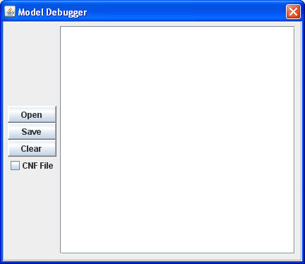
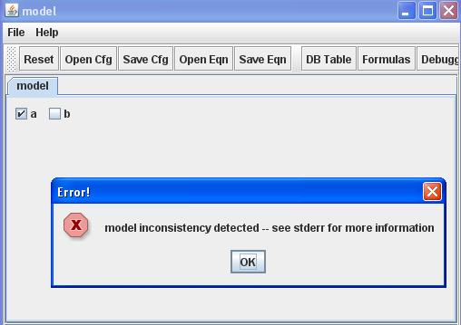
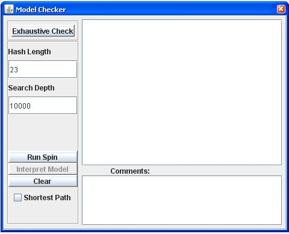
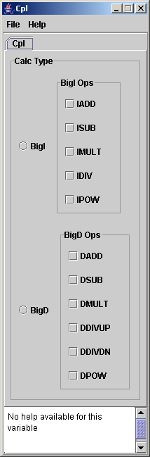

|
|
The guidsl Tool |
guidsl is the tool for specifying AHEAD models and feature usage/compatibility constraints (i.e., design rules). It replaces the design-rule checking tool drc.
A guidsl model is an annotated grammar where each sentence defines a member of an AHEAD product-line. Tokens are features and consecutive features are composed. Constraints on sentences are defined by arbitrary propositional formulas. guidsl takes a model as input, and produces a declarative specification language for specifying products. Outputs of guidsl are equation (singular or plural!) files from which you can synthesize particular programs. guidsl can also be called programmatically as a tool to verify feature selection compatibilities.
Model Specification File |
A model file has a .m extension. It has the following 3-part format:
| grammar definition %% propositional constraints ## annotations |
Briefly, an AHEAD or GenVoca model of a domain is a grammar. Tokens represent individual features and sentences represent particular compositions of tokens. Not all sentences are legal. Arbitrary propositional formulas can be defined to eliminate unwanted feature combinations (sentences). Annotations are used to control the display of a GUI declarative language.
Only the grammar definition is required in a model specification. If propositional constraints are present, these constraints are distinguished from the grammar definition by the %% separator. If annotations are present, they are separated from constraints and grammar by ##.
Grammars |
A guidsl grammar is a sequence of productions, the start production is the first that is listed.
A production is a set of one or more named patterns. Production Pr (below) has named patterns P1, P2, and P3:
Pr : ... :: P1 | ... :: P2 | ... :: P3 ;
Production names are on the left-hand side, pattern names follow a pattern (...) that is terminated by ::.
A pattern is a series of terms or optional terms. A term is:
An optional term is:
An example pattern begins with the token ALPHA, followed by zero-or-one beta, followed by one-or-more gamma, followed by an optional token DELTA::
ALPHA [beta] gamma+ [DELTA]
Exception. In the case when a pattern is just a single token, it is not necessary to specify a pattern name. Instead, a pattern name is generated. The name of the pattern that is formed by a single TOKEN is _TOKEN (i.e., underscore prepended).
Order of Composition. Note: write your grammars so that the "base" feature or token always terminates the right-hand side of your grammar, and that tokens (features) are composed in the order in which you would compose functions. For example, the production:
Pr : A B C :: P1 ;
means start with feature C, compose B, and then compose A, i.e., A(B(C))).
Constraints in Writing Grammars |
Please make note of the following constraints as you design your model grammar.
Propositional Constraints |
The variables of a grammar are:
Arbitrary propositional constraints (formulas) can be defined, one per line, that reference these variables. Formulas can be constructed from the following operators, listed in order of their precedence:
In addition, new variables may be defined by the following statement:
let <variableName> iff <propositional formula>;
The ability to define additional variables is useful when repeated propositional formulas arise in constraint specification.
Annotations |
Tokens and productions can be annotated to alter their display or internal actions. Let Tag denote a token or production name. The format of an annotation is:
Tag { <annotation-list> }
Where an annotation list is a list of zero or more phrases of the form:
singleAnnotation
stringAnnotation = "value"
We'll consider each type in turn. Four string annotations are currently supported:
Three single annotations are supported:
this = A B C D E F G
where the grammar is:
root : left right :: full ; left : A B C :: leftprod; right : D E F G :: rightprod;
Using the annotations:
left { eqn }
right { eqn }
the equations file that would be generated is:
this = left right left = A B C right = D E F G
Tool Features |
guidsl has many features, some of which are documented in the following sections. These features are accessible through the file or help menus.
Model Debugger |
Internally, guidsl maps a model specification to a propositional formula, which is ideal for constraint propagation. But it may also be useful in model debugging. guidsl uses the sat4j satisfiability solver to help debug models. As a model designer, you know what sets of features should be compatible or incompatible. You can define these as a sequence of tests, by placing them in a file. A set of features that are compatible means that if these features are selected, the propositional formula of the model is satisfiable (i.e., other features can still be selected to satisfy the formula). To run a file of tests, run the model debugger (screen snapshot is below), and open the test file.

A test file is a sequence of named tests. A compatibility test is defined as:
#true <rest of this line is the name of the test> <sequence of primitive TOKENS separated by blanks that define the set of compatible features; may be on one or more lines> # any line beginning with a # is a comment, except for #true, #false, and #end #end
So if features A, B, C are compatible, the following test will confirm it:
#true A,B,C are compatible A B C #end
If a set of features is known to be incompatible, the following specification is used:
#false <name of test> <sequence of TOKENS separated by blanks across one or more lines> #end
So if features A, B, D are incompatible, the following test will confirm it:
#false A,B,D are incompatible A B D #end
Note: it is also possible to verify that features are deselected. This is specified by placing a "-" (minus) immediately prior to a feature name with no separating blanks. For example, if features A and B are selected (true) and D is deselected (false), the following test will verify this:
#true A,B and not D are compatible
A B -D
#end
Another feature of model debugging that does not involve a SAT solver is testing whether or not a specification (a set of features) is complete. Here's how it works. To test whether selecting features A and B (followed by an automatic propagation of constraints) yields a complete specification, write:
#complete this tests to see if A and B will result in a complete specification A B #end
To test to see if features A and C (and automatically propagating constraints) yields an incomplete specification, write:
#incomplete this tests if A and C are not a complete specification A C #end
Using the above capabilities will significantly help in debugging your models. Also see the next section on the Model Checker.
Finally, it is possible that you'll have many test files. You can "link" these test files together using an "include" facility. The statement:
#file <path to debug file>
will process the listed debug file after the current debug file is checked.
As an option, a file _debug.cnf can be generated during a debug session. This can be done by clicking the cnf file option inthe model debug window. (Generally you won't want to see it). The file is in standard cnf (conjunction normal form) format. Before each cnf encoding, there are 3 comment lines. The first displays the original formula, the second displays a simplification of this formula, and the third is the CNF formula from which the .cnf encodings are displayed.
Model Checker |
Consider the following model. It allows you to optionally select features A and B. But note the additional constraints: if A is selected then B is automatically selected, and if B is selected, A is deselected.
model : [a] [b] c :: main;
%%
a implies b;
b implies not a;
Of course, this model is inconsistent. That is, selecting a feature propagates the conclusion that the feature is deselected. As a model grows in size, it is difficult to find such "inconsistencies". Unfortunately, a common way in which inconsistencies are detected is by model users. In the above model, when a user selects A, a dialogBox pops up alerting to a model inconsistency.
In order to avoid this, the model designer should be able to detect inconsistencies prior to its public release. For this purpose guidsl comes with a Model Checker that helps in detecting inconsistencies. guidsl offers two different ways to identify inconsistencies: Exhaustive Check and using Spin. Given below is a snapshot of the ModelChecking GUI:
 Exhaustive Check. We have implemented an algorithm based on enumeration. The "Exhaustive Check" button at the top, makes a search using our algorithm. The tool makes a complete search of the state space, checking every possible user selection. Our algorithm is efficient in terms of memory usage, but for very large models, the user has to be patient and has to wait for the search to complete.
Our experience is that our algorithm is generally faster than Spin for most models.
The output details are given below:
Variable Table and Propositional Formulas |
The set of variables that are generated by a model, and their values, can be displayed via the help menu. By clicking on a particular row (variable), an explanation for its value is displayed at the bottom of the table. This is useful in debugging and understanding models.
Similarly, the set of propositional formulas that are derived from the model can be viewed via the help menu.
Variable Value Explanations |
guidsl propagates constraints, and thus assigns values to individual variables automatically after a user has made his/her selections. By moving a mouse over a particular feature (typically a primitive feature), you can display the reason for the variable having a particular value. The explanation is in the form of a proof, starting from an assumption. Please note that when examining a formula, remember an inference is drawn when all variables (or their negation) except one -- the variable whose value is being inferred -- is false. This will help you interpret the explanations given. If you want to see the values and explanations for all variables, view the variable table.
Saving Equations and Configurations |
You can save your work in one of two ways. You can save your current configuration into a file, via the file menu. Of course, you can subsequently reload this configuration later, again via the file menu.
You can also generate an equations (plural!) file. But before this can be done, guidsl checks that you have a complete specification. If a cnf formula, which is derived from the model formula, is not satisfied, an explanation for what needs to be done is presented or the formula that caused the failure is present. The latter may not be the best explanation, but we're working on a better user interface for this.
Note: if guidsl is started with the -e option, then equation (single!) files are generated.
Model Mode |
To integrate a guidsl model with an AHEAD model, standard (and tedious) mappings must be performed, and consistency checks could be automated. In particular, we would like to know if each terminal in the grammar is a layer in the model, and if each layer in a model is a terminal in the grammar. To test this, type:
> guidsl -md
Any discrepancies will be noted. (The -d option is important, as this check is made only during debugging).
Another use is the setting of the help and helpfile annotations. When guidsl is invoked in the -m (model mode):
> guidsl -m
The following annotations are generated if the corresponding files (feature.expl or help.html) are present:
Layer { help = "layer/feature.expl" helpfile="layer/help.html" }
Example |
Consider an elementary product line of post-fix calculators. Calculators are differentiated on the data type BigInteger (BigI) or BigDecimal (BigD) that can be specified and the set of operations that can be performed on such numbers. IADD is the add operation for BigIntegers, DADD is the add operation for BigDecimals. The set of operations on BigDecimal numbers is slightly larger than that for BigIntegers as it allows for division results to be rounded up (DDIVDN) or rounded down (DDIVDUP). A GUI for specifying a calculator is shown to the right. A guidsl specification of this model is:
| Cpl : Type BASE :: CplMain ; Type : IOp+ BIGI :: ICalc | DOp+ BIGD :: DCalc ; IOp : IADD | ISUB | IMULT | IDIV | IPOW ; DOp : DADD | DSUB | DMULT | DDIVUP | DDIVDN | DPOW ; %% // non-grammar constraints not (DDIVDN and DDIVUP); // choose one IMULT or IDIV or IPOW implies IADD and ISUB; DMULT or DDIVUP or DDIVDN or DPOW implies DADD and DSUB; ## // annotations Type { disp="Calc Type" } IOp { disp="BigI Ops" } DOp { disp="BigD Ops" } ICalc { disp="BigI" } DCalc { disp="BigD" } |
The CPL grammar captures most of the constraints of this product line. The above
model lists three additional constraints.
At most one decimal division operation can be chosen, and
Selecting multiply, division, or power operations requires the selection of addition and subtraction; there is one rule for BigIntegers and a second for BigDecimals.
Annotations are used to beautify the display. Instead of displaying "Type", the string "Calc Type" is displayed, etc.
Command Line Options |
guidsl is normally invoked in one of two ways from the command line. Either directly:
guidsl <file>.m
or in model mode:
guidsl -m
Additional options remain for debugging.
Usage: guidsl <options> <file>.m
<file>.m is a feature model
options -d debug
-p print input file
-m model mode uses 'model.m'
-e equation file format -c check model for inconsistencies
Debug mode is typically not useful, except for debugging guidsl itself. However, there is a case when an input model is inconsistent (before any user selects features). You can debug such a model with the -d feature, as model constraints are not immediately propagated prior to presenting the original GUI interface.
Programmatic Invocation |
To invoke guidsl from a tool, here are the steps:
The following is a program that tests the CPL model programmatically and illustrates the above rules.
| import guidsl.*; class test { static Tool tool = null; static boolean makeCnfFile = true; static boolean compatSelections = true; public static void main( String args[] ) { tool = new Tool( "cpl.m" ); // verifies that IPOW and BIGI are compatible SATtest t = new SATtest( "test1", compatSelections ); t.add("IPOW"); t.add("BIGI"); runTest( t, makeCnfFile );
// verifies that
IPOW and -BIGI are incompatible // outputs |
Copyright © Software Systems Generator Research Group.
All rights reserved.
Revised: July 18, 2007.